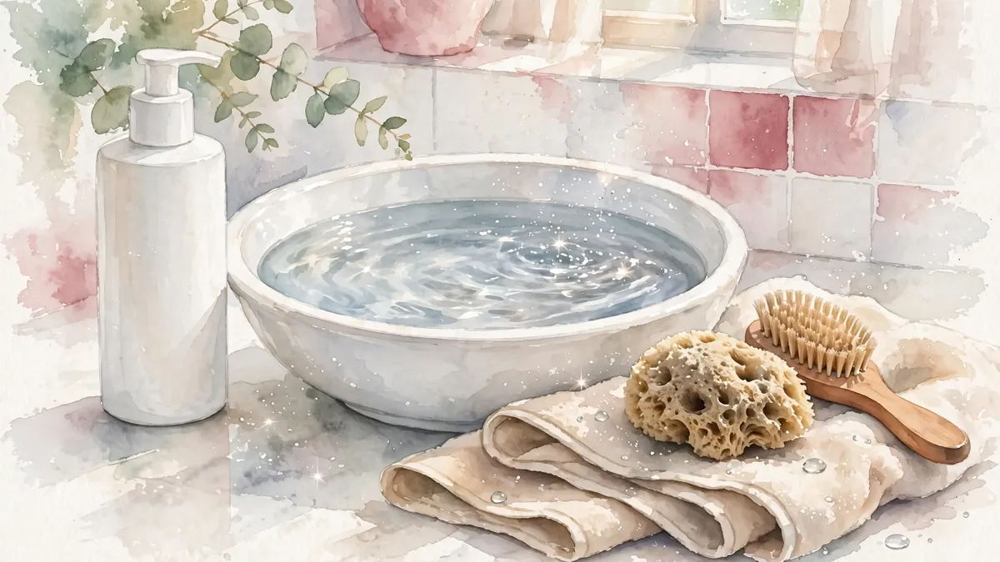
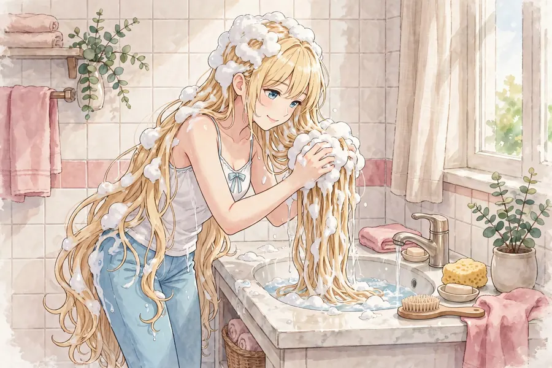

トップ ＞ ヘアケア ＞ 頭皮のベタつき・乾燥感と洗い方の工夫
頭皮のベタつき・乾燥感と洗い方の工夫

「頭皮がベタつく感じがする」「乾燥してカサつく感じがする」。ヘッド施術の現場でも、こうした感覚の相談は季節を問わずあります。アイテムを買い替える前に、洗い方の調整で様子を見る、という選択肢もあります。この記事では、洗い方の工夫を整理します。なお、かゆみや赤みなどが続く場合は、洗い方の問題とは限りませんので、皮膚科などの専門家に相談してください。
まず、予洗いの時間を変えてみる
シャンプーをつける前の「予洗い」は、洗い上がりを大きく左右します。お湯だけで髪と頭皮をしっかり濡らす時間を長めに取ると、表面の汚れや整髪料の多くは、この段階で流れていきます。ベタつきを感じる日ほど、予洗いを丁寧にすると、シャンプーの泡立ちも安定します。
私は施術でも、シャンプー前の予洗いに時間をかけます。目安は、髪全体が均一に濡れて、指で頭皮を触ったときにお湯が行き渡っている感触が得られるまでです。
シャンプーは「頭皮」と「髪」で分けて考える
シャンプーをつける目的は、頭皮と髪では少し違います。皮脂や汗がたまるのは主に頭皮、整髪料やほこりが付くのは主に髪です。泡は頭皮を中心に行き渡らせ、髪はその泡で包むように洗うと、髪同士の摩擦を抑えながら洗えます。乾燥感が気になる日は、シャンプーをつける回数を増やすのではなく、泡の行き渡らせ方を見直すのが先です。
爪を立てず、指の腹で頭皮を動かすように洗うのも、現場で徹底している基本です。力加減は「気持ちいい」と感じる範囲が目安です。
すすぎは、温度と時間で調整する
すすぎ残しは、ベタつき感の原因のひとつとしてよく挙げられます。耳の後ろ、生え際、後頭部は、すすぎが不足しやすい場所です。シャワーの温度は熱すぎない程度にし、洗う時間と同じくらい、すすぎにも時間をかけるのが私の基準です。
洗い方は、今日の感覚に合わせて調整してよいものです。ベタつく日は予洗いを長く、乾燥感のある日は泡の置き方を丁寧に。アイテムを変える前に、まず洗い方の調整から試してみてください。
運動をした日や、整髪料をしっかり使った日は、予洗いの時間をさらに長めに取るのがおすすめです。逆に、ほとんど外出していない日は、泡の量を控えめにしてすすぎを丁寧にするなど、その日の過ごし方で調整できます。洗い方は固定した手順ではなく、その日の状態に合わせて組み替えるもの。施術の現場でも、お客様の当日の様子を聞いてから洗い方を決めています。
洗い方を変えたら、数日は同じ方法を続けて様子を見てください。日によって感覚は揺れるため、1日で判断せず、数日の平均で見るのが現場の感覚です。

セラフィナ「洗い方の調整だけでも、感じ方は変わることがあるんだね。まずは予洗いから」